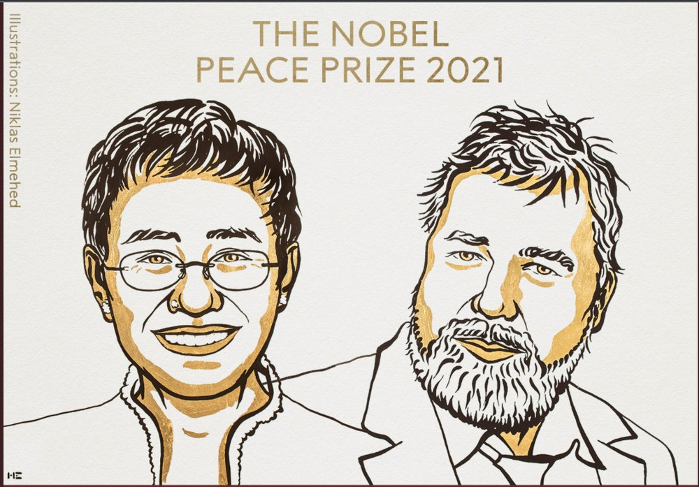

Nobel da Paz 2021 contempla a defesa da liberdade de expressão

Os jornalistas Maria Ressa e Dmitry Muratov ganharam o prêmio Nobel da Paz de 2021 por seus esforços para defender a liberdade de expressão, anunciou a Academia Real das Ciências da Suécia nesta sexta-feira (8). A academia afirmou que Ressa e Muratov receberam o Nobel da Paz "pela corajosa luta" nas Filipinas e na Rússia e que a liberdade de expressão "é uma pré-condição para a democracia e para uma paz duradoura".
Os dois jornalistas ajudaram a fundar veículos de comunicação independentes em seus países e vão dividir o prêmio de 10 milhões de coroas suecas (cerca de R$ 6,3 milhões). Muratov é um dos fundadores de um jornal russo que já teve seis jornalistas assassinados.
A academia sueca disse também que "esses direitos são pré-requisitos essenciais para a democracia e protegem contra guerras e conflitos" e que o prêmio para os jornalistas "visa salientar a importância de proteger e defender esses direitos fundamentais [as liberdades de expressão e informação]".
Explosão em mesquita no Afeganistão deixa mais de 100 mortos e feridos
Pelo menos 100 pessoas morreram e outras 140 ficaram feridas na explosão, nesta sexta-feira (8), em uma mesquita xiita na cidade de Kunduz, no nordeste do Afeganistão. A missão da ONU no país deu o balanço de mortos.
Um médico do hospital central de Kunduz que pediu para não ser identificado afirmou que o local recebeu 35 corpos e mais de 50 feridos. Pouco antes, um responsável local da ONG Médicos Sem Fronteiras (MSF) afirmou que "mais de 90 feridos e 15 corpos" haviam chegado à sua clínica na cidade.
O porta-voz do Talibã, Zabihullah Mujahid, fez um comentário sobre a explosão: "Houve uma explosão em uma mesquita de nossos compatriotas xiitas, e o resultado disso é que um número de nossos compatriotas foram martirizados e feridos".
UFPR tem vaga para docente no setor Litoral
A Universidade Federal do Paraná (UFPR), por meio do Diário Oficial da União, divulgou a realização de um novo Processo Seletivo destinado à contratação de um professor substituto para o Setor Litoral. O docente será responsável por ministrar aulas na área/matéria de Libras, em jornada de 40 horas por semana, com remuneração variável de R$ 3.130,85 a R$ 5.831,21, acrescido de auxílio-alimentação no valor de R$ 458,00.
É preciso ter Licenciatura em Letras-Libras e/ou Licenciatura (qualquer área) e especialização em Libras e/ou Pós-graduado em Libras; ou Pós-graduado, com certificado de proficiência em Libras obtido por meio de exame realizado por Instituição credenciada pelo MEC. Os candidatos com licenciatura em letras libras são dispensados do certificado de Proficiência em Libras (Prolibras) com base no Decreto 5.626/2005.
As inscrições devem ser realizadas entre os dias 7 a 14 de outubro de 2021, das 8h às 17h, mediante preenchimento e assinatura do requerimento de inscrição específico, disponibilizado no site da UFPR Litoral e do pagamento da taxa de participação no valor de R$ 45,00. Serão aceitos pedidos de isenção da taxa de inscrição.